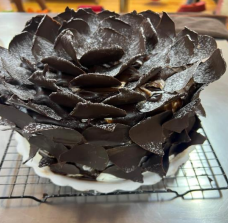

← Volver al módulo 6

Torta Rosa Negra
Una torta elegante con relleno cremoso de manjar y crema de leche, cubierta de chocolate semiamargo y decorada con pétalos de chocolate y azúcar impalpable.
Ingredientes del Relleno
- Manjar de dulce de leche
- Crema de leche
Ingredientes para Decoración
- ½ litro de crema Dagusto
- Chocolate semiamargo
- Papel mantequilla
- 300 g de chocolate
- 250 g de crema de leche
Preparación del Relleno
-
Batir la crema de leche y reservar.
-
Colocar manjar y crema de leche en cada capa de la torta y refrigerar durante 10 minutos.
Decoración
- Batir la crema Dagusto hasta que esté semi montada.
- Aplicar una capa atrapa migas y alisar con 1 cm de grosor. Cubrir con chocolate derretido en toda la torta.
- Decorar con pétalos de chocolate hechos al momento y espolvorear un poco de azúcar impalpable.